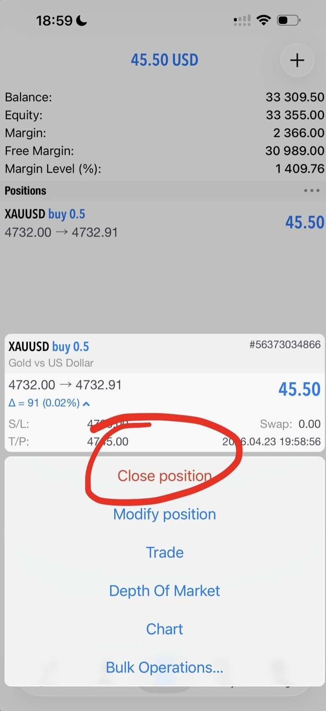
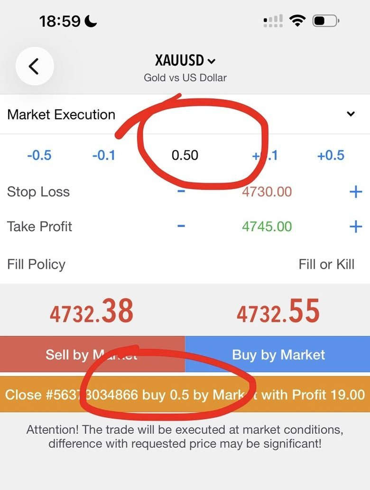

Сигнал не винен.Винен вхід.
Більшість зливає не тому, що сигнал поганий. А тому, що зайшли не за тим числом, не тим лотом і без стопа. Тут розібрано, як заходити так, щоб результат залежав від сигналу, а не від того, як ти його прочитав.
Читаємо сигнал
У кожному сигналі п'ять речей. Більше нічого вигадувати не треба.
Відкриваємо угоду
MetaTrader 5, чотири дії. Нічого не змінюємо від себе.
- 01
Знаходимо інструмент
Котирування, далі XAUUSD, далі Trade.
- 02
Ставимо лот
Обсяг рахуємо під свій депозит. Як саме, у блоці 04.
- 03
Вписуємо Stop Loss і Take Profit
Один в один із сигналу. Не округлюємо і не рухаємо на своє око.
- 04
Натискаємо Buy by Market
Або Sell by Market, якщо сигнал на продаж.


Цифри на скрінах з іншої угоди. Вони тут тільки щоб показати, де що стоїть. Свої бери тільки з сигналу.
Закриваємо позицію
Угода закривається сама по TP або по SL. Вручну закриваємо, коли треба вийти раніше.
- 01
Close position
Trade, потім Close position. Угода закривається повністю за поточною ціною.
- 02
Modify position
Тут міняємо SL і TP уже у відкритій угоді. Це ж вікно потрібне для беззбитку.


Розмір лота
Це головне місце, де люди зливають. Не сигнал, а обсяг.
| Депозит | Максимальний лот |
|---|---|
| до $300 | 0.01 |
| $300 до $400 | 0.02 |
| $400 до $600 | 0.03 |
| $600 до $800 | 0.04 до 0.05 |
| $900 до $1000 | 0.06 |
| $10 000 | 0.1 |
| $15 000 | 0.15 |
| $20 000 | 0.3 |
| $30 000 | 0.7 |
Це стеля, а не рекомендація. Лот рахується під конкретний стоп, а не під депозит взагалі.
Contract size для золота 100, для валютних пар 100 000.

Беззбиток
Коли ціна пішла в твій бік і взяла перший тейк, стоп переноситься на ціну входу. Після цього угода вже не може закритись у мінус.
- 01
Modify position
Відкриваєш угоду і йдеш у зміну параметрів.
- 02
Ставиш SL на ціну входу
Зайшов на 4732, стоп стояв на 4730. Ціна пішла вгору, перший тейк узятий. Переставляєш SL на 4732 і тиснеш Modify. Тепер гірше нуля не буде.


Скільки ризикувати
Ризик рахується від депозиту на одну угоду. Не від настрою і не від того, наскільки впевнений у сигналі.
Стоп ставиться завжди. Без винятків і без "цього разу точно піде".
Якщо пропустив вхід
Ціна вже пройшла більше двох, трьох доларів від точки входу? Сигнал пропускаємо. Наступний буде.
Пропущений сигнал це не втрата. Втрата це коли стрибаєш у вагон на ходу і виходиш у мінус.
Питання лишились?
Сигнали лежать у закритому каналі. Якщо щось не зійшлося або не виходить виставити угоду, пиши менеджеру, розберемо.
Написати менеджеру →@managvalik